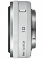

器材库 > APS画幅镜头 > 1 NIKKOR 10/2.8

详细规格
镜头类型
广角镜头
发布日期
2011-09-21
厂家推荐价格
2,100.00 （人民币）
焦距
10mm
等效35mm画幅焦距
27mm
最大光圈
f/2.8
最小光圈
f/11
视角（对角）
77°
镜头结构
6片/5组
非球面镜片
2片
光圈叶片
7片
最近对焦距离
20cm
最大放大倍率
0.06倍
滤镜口径
40.5mm
镜头卡口
Nikon 1
防抖
否
颜色
黑色, 白色
尺寸
55.5×22mm
重量
77g
teda1232014-01-21 15:214.83 分
操作性 5.00耐用性 5.00性价比 5.00解像力 4.50色彩还原 4.50机械结构 5.00
上帝武装2013-08-17 11:384.42 分
操作性 4.00耐用性 4.00性价比 5.00解像力 4.50色彩还原 4.50机械结构 4.50
zmhy2012-07-30 10:294.5 分
操作性 5.00耐用性 5.00性价比 4.00解像力 4.00色彩还原 4.00机械结构 5.00
小鬼大师2011-11-22 15:104.42 分
操作性 4.50耐用性 4.50性价比 3.50解像力 4.50色彩还原 4.50机械结构 5.00
产品图 / 样片
1 NIKKOR 10/2.8
评测 / 相关文章
该产品暂无存档的评测文章
相关文章
- ［试用］Nikon 1相机镜头使用体会 （存档）
- ［试用］Nikon 1系统两机四头日本九州行 （存档）
- ［资讯］尼康全球发布首款EVIL相机及附件 （存档）
- ［影像］尼康全新1系列相机样片赏析 （存档）
- ［资讯］尼康 1 NIKKOR 10/2.8 （原站已下线）